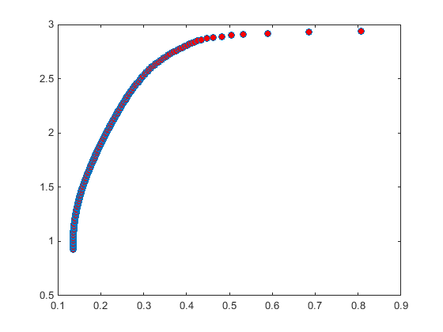
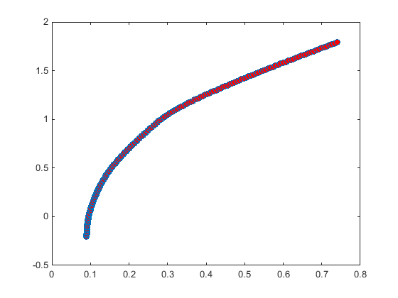
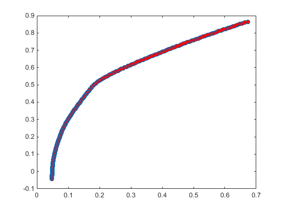
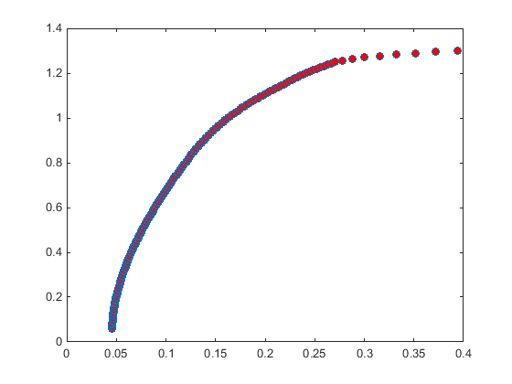

Contents
clear all;
clc
2015_1_6
step1 数据清洗
导入数据
[dayReturn]=xlsread('2015_1_dayReturn.xlsx',1); % 日对数收益率转为年化收益率 ExpReturn=mean(dayReturn')*246; % 协方差矩阵 m_cov=cov(dayReturn')*246; % 对角线元素加一个很小的正数，将协方差矩阵转为半正定 ExpCovariance=m_cov+.0001 * eye(299);
step2 计算有效边界前沿
%PortRisk 资产组合的标准差 %PortReturn 资产组合收益 %PortWt 资产组合权重 %rf 无风险利率 NumPort=200; [PortRisk,PortReturn ,PortWts]=frontcon(ExpReturn,ExpCovariance,NumPort); figure; plot(PortRisk,PortReturn,'o','markerfacecolor', [ 1, 0, 0 ]) rf=0.0369; for i=1:200 sharpe_ratio(i)=(PortReturn(i,1)-rf)/PortRisk(i,1); end %切点的sharpe_ratio max_ratio=max(sharpe_ratio) [r,c]=find(sharpe_ratio==max_ratio); %切点的权重组合 PortWts(c,:);
max_ratio =
9.3692
 2015_6_12
step1 数据清洗
导入数据
[dayReturn]=xlsread('2015_6_dayReturn.xlsx',1); % 日对数收益率转为年化收益率 ExpReturn=mean(dayReturn')*246; % 协方差矩阵 m_cov=cov(dayReturn')*246; % 对角线元素加一个很小的正数，将协方差矩阵转为半正定 ExpCovariance=m_cov+.0001 * eye(300);
step2 计算有效边界前沿
%PortRisk 资产组合的标准差 %PortReturn 资产组合收益 %PortWt 资产组合权重 %rf 无风险利率 NumPort=200; [PortRisk,PortReturn ,PortWts]=frontcon(ExpReturn,ExpCovariance,NumPort); figure; plot(PortRisk,PortReturn,'o','markerfacecolor', [ 1, 0, 0 ]) rf=0.0369; for i=1:200 sharpe_ratio(i)=(PortReturn(i,1)-rf)/PortRisk(i,1); end %切点的sharpe_ratio max_ratio=max(sharpe_ratio) [r,c]=find(sharpe_ratio==max_ratio); %切点的权重组合 PortWts(c,:);
max_ratio =
3.4120
 2016_1_6
step1 数据清洗
导入数据
[dayReturn]=xlsread('2016_1_dayReturn.xlsx',1); % 日对数收益率转为年化收益率 ExpReturn=mean(dayReturn')*245; % 协方差矩阵 m_cov=cov(dayReturn')*245; % 对角线元素加一个很小的正数，将协方差矩阵转为半正定 ExpCovariance=m_cov+.0001 * eye(299);
step2 计算有效边界前沿
%PortRisk 资产组合的标准差 %PortReturn 资产组合收益 %PortWt 资产组合权重 %rf 无风险利率 NumPort=200; [PortRisk,PortReturn ,PortWts]=frontcon(ExpReturn,ExpCovariance,NumPort); figure; plot(PortRisk,PortReturn,'o','markerfacecolor', [ 1, 0, 0 ]) rf=0.029; for i=1:200 sharpe_ratio(i)=(PortReturn(i,1)-rf)/PortRisk(i,1); end %切点的sharpe_ratio max_ratio=max(sharpe_ratio) [r,c]=find(sharpe_ratio==max_ratio); %切点的权重组合 PortWts(c,:);
max_ratio =
2.7386
 2016_6_12
step1 数据清洗
导入数据
[dayReturn]=xlsread('2016_6_dayReturn.xlsx',1); % 日对数收益率转为年化收益率 ExpReturn=mean(dayReturn')*245; % 协方差矩阵 m_cov=cov(dayReturn')*245; % 对角线元素加一个很小的正数，将协方差矩阵转为半正定 ExpCovariance=m_cov+.0001 * eye(299);
step2 计算有效边界前沿
%PortRisk 资产组合的标准差 %PortReturn 资产组合收益 %PortWt 资产组合权重 %rf 无风险利率 NumPort=200; [PortRisk,PortReturn ,PortWts]=frontcon(ExpReturn,ExpCovariance,NumPort); figure; plot(PortRisk,PortReturn,'o','markerfacecolor', [ 1, 0, 0 ]) rf=0.029; for i=1:200 sharpe_ratio(i)=(PortReturn(i,1)-rf)/PortRisk(i,1); end %切点的sharpe_ratio max_ratio=max(sharpe_ratio) [r,c]=find(sharpe_ratio==max_ratio); %切点的权重组合 PortWts(c,:);
max_ratio =
6.4834
 结论
%2015年上半年通过分散化可以高达9.4140的sharpe_ratio %2015年下半年通过分散化只有3.4409的sharpe_ratio %2016年上半年的分散化最高sharpe_ratio=2.7386 %2016年下半年的分散化最高sharpe_ratio=6.4834 %分散化的结果基本与沪深300的走势一致 %相对来说，2016年下半年实行分散化取得不错的结果。